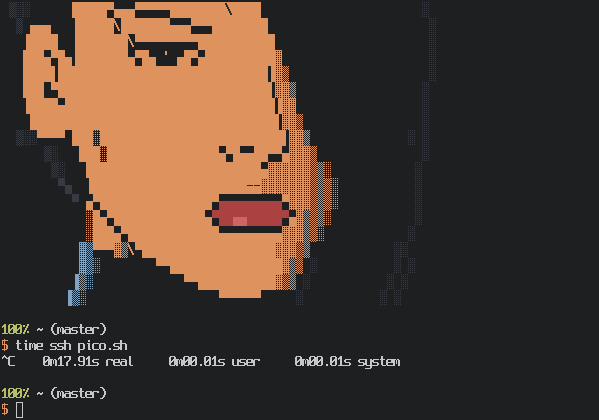
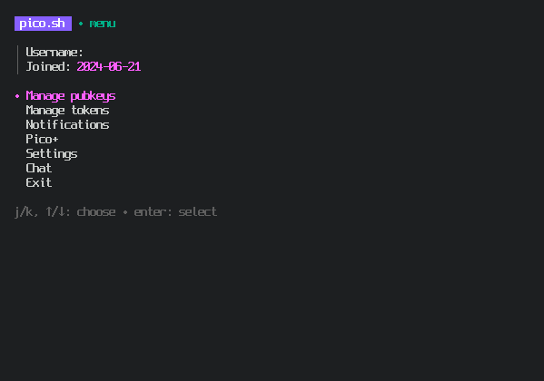

Merhaba, bir blog olusturma surecine girdim. Aslinda daha onceleri blog olusturdum. (Pek yazi yazmadim) Bu konuda deneyimliyim blog olusturmada! Blog'um uzerinde sistem,programlama ve elektronik konularinda paylasimlar yapmaya karar verdim. Daha once forumlar uzerinde paylasimlarda bulunuyordum zaten. ('nix sistemler, yazilim ve elektronik tamir')
Github, uzerinde paylasimlarda bulunuyorum zaman zaman ama blog acip yazi yazmadim. Bir arama surecine girdim ve benim icin onemli olan kriter basit ve kolaylik pico.sh sitesine goturdu. Github da kolay ama baska yer olsun istedim. Blogumu bu site uzerinde olusturmaya basladim. efek.prose.sh adinda bir blog actim. Ancak pek kolay olmadi kendi isletim sistemimde. Kisisel laptobumda OpenBSD-current ile MacOS-Sonoma kullanmaktayim. MacOS ile blog olusturmak istedigimde baglantida herhangi bir sorun yasamadim. ssh pico.sh dedigimde baglaniyorum.OpenBSD ile denedigimde ise baglantida sorun yasiyorum.Aslinda baglanmaya calisyor surekli ama bir turlu mutlu resmi goremedim ne yazik!

Beklememe ragmen baglanti kurulamiyor! ssh -v pico.sh komutu ile baktigimda burada takildigini gordum.
$ ssh -v pico.sh
OpenSSH_9.7, LibreSSL 3.9.0
debug1: Reading configuration data /home/efek/.ssh/config
debug1: /home/efek/.ssh/config line 1: Applying options for pico.sh
debug1: Reading configuration data /etc/ssh/ssh_config
debug1: Connecting to pico.sh [141.148.85.132] port 22.
debug1: Connection established.
debug1: identity file /home/efek/.ssh/id_ed25519 type 3
debug1: identity file /home/efek/.ssh/id_ed25519-cert type -1
debug1: Local version string SSH-2.0-OpenSSH_9.7
debug1: Remote protocol version 2.0, remote software version Go
debug1: compat_banner: no match: Go
debug1: Authenticating to pico.sh:22 as 'efek'
debug1: load_hostkeys: fopen /home/efek/.ssh/known_hosts2: No such file or directory
debug1: load_hostkeys: fopen /etc/ssh/ssh_known_hosts: No such file or directory
debug1: load_hostkeys: fopen /etc/ssh/ssh_known_hosts2: No such file or directory
debug1: SSH2_MSG_KEXINIT sent
debug1: SSH2_MSG_KEXINIT received
debug1: kex: algorithm: curve25519-sha256
debug1: kex: host key algorithm: ssh-ed25519
debug1: kex: server->client cipher: chacha20-poly1305@openssh.com MAC: <implicit> compression: none
debug1: kex: client->server cipher: chacha20-poly1305@openssh.com MAC: <implicit> compression: none
debug1: expecting SSH2_MSG_KEX_ECDH_REPLY
Bu sorunun sistemden kaynaklandigi anladim. Adrese ping gonderdigim zaman geri donus olmaktaydi.OpenSSH yazilimina baktigimda, LibreSSL kullandigini gordum. Zaten OpenBSD de bir degisklik yapmadiginiz surece LibreSSL kullaniyor.
$ ssh -V
OpenSSH_9.7, LibreSSL 3.9.0
LibreSSL, OpenBSD'in guvenlik odakli gelistirdigi bir SSL yazilimi..(OpenSSL catali) OpenSSH'i, LibreSSL ile degil de OpenSSL ile entegreli tekrar derlersem bu sorunu asacagimi saniyorum ve ellerimi kirletme zamani gelmistir diyerek, baslatim OpenSSH yazilimi indirmeye! Bu adreste derleme icin gerekli bilgiler bulunmakta ama OpenSSL nerede!!! Soyle bir depolarda arama yaptigimda, OpenSSL yazilimin depolarda oldugunu gordum.
$ pkg_find openssl
1 debug-openssl-1.1.1wp1v0
2 debug-openssl-3.1.6v0
3 debug-openssl-3.2.2v0
4 debug-openssl-3.3.1v0
5 openssl-1.1.1wp1v0
6 openssl-3.1.6v0
7 openssl-3.2.2v0
8 openssl-3.3.1v0
Ben burada 'openssl-3.2.2v0' surumunu kullandim. Neden mi? OpenVPN icin de onu kullandim. Biraz daha stabil bir surumu. OpenSSH yazilimi derleme islemine gecmeden once biraz duzenlemem gerekti. Onun icin 'Makefile.inc' dosyasina soyle bir ekleme yaptim!
OPENSSL?= no
ZLIB?= yes
DSAKEY?= yes
.if (${OPENSSL:L} == "yes")
#CFLAGS+= -DWITH_OPENSSL
OPENSSL_LIBS="-L/usr/local/lib/eopenssl32 -Wl,-rpath,/usr/local/lib/eopenssl32 -lssl -lcrypto" \
OPENSSL_CFLAGS="-I/usr/local/include/eopenssl32/" --with-crypto-library=openssl \
Yazilimi derleme islemi sorunsuz tamamlandigi zaman surum kontrolu yaptigimda!
$ /home/efek/code/ssh/ssh -V
OpenSSH_9.7, without OpenSSL
Sorunsuz bir sekilde LibreSSL yerine artik OpenSSL olarak degistigini gordum! Bana bu kadar yeterli diye kontrol ettigimde. libcryto.so kitapliginin baglanmadigini gordum.
$ ldd /home/efek/code/ssh/ssh/obj/ssh
/home/efek/code/ssh/ssh/obj/ssh:
Start End Type Open Ref GrpRef Name
000005e6a49b8000 000005e6a4a87000 exe 1 0 0 /home/efek/code/ssh/ssh/obj/ssh
000005e8d9581000 000005e8d9599000 rlib 0 1 0 /usr/lib/libutil.so.18.0
000005e989eb3000 000005e989ed1000 rlib 0 1 0 /usr/lib/libz.so.7.0
000005e98ce9b000 000005e98cfa1000 rlib 0 1 0 /usr/lib/libc.so.100.1
000005e902cee000 000005e902cee000 ld.so 0 1 0 /usr/libexec/ld.so
Sonra ugrasmak yerine deneme yapmaya karar verdim ve sonuc basariliydi.
$ /home/efek/code/ssh/ssh/obj/ssh -v pico.sh
OpenSSH_9.7, without OpenSSL
debug1: Reading configuration data /home/efek/.ssh/config
debug1: /home/efek/.ssh/config line 1: Applying options for pico.sh
debug1: Reading configuration data /etc/ssh/ssh_config
debug1: Connecting to pico.sh [141.148.85.132] port 22.
debug1: Connection established.
debug1: identity file /home/efek/.ssh/id_ed25519 type 3
debug1: identity file /home/efek/.ssh/id_ed25519-cert type -1
debug1: Local version string SSH-2.0-OpenSSH_9.7
debug1: Remote protocol version 2.0, remote software version Go
debug1: compat_banner: no match: Go
debug1: Authenticating to pico.sh:22 as 'efek'
debug1: load_hostkeys: fopen /home/efek/.ssh/known_hosts2: No such file or directory
debug1: load_hostkeys: fopen /etc/ssh/ssh_known_hosts: No such file or directory
debug1: load_hostkeys: fopen /etc/ssh/ssh_known_hosts2: No such file or directory
debug1: SSH2_MSG_KEXINIT sent
debug1: SSH2_MSG_KEXINIT received
debug1: kex: algorithm: curve25519-sha256
debug1: kex: host key algorithm: ssh-ed25519
debug1: kex: server->client cipher: chacha20-poly1305@openssh.com MAC: <implicit> compression: none
debug1: kex: client->server cipher: chacha20-poly1305@openssh.com MAC: <implicit> compression: none
debug1: expecting SSH2_MSG_KEX_ECDH_REPLY
debug1: SSH2_MSG_KEX_ECDH_REPLY received
debug1: Server host key: ssh-ed25519 SHA256:....
debug1: load_hostkeys: fopen /home/efek/.ssh/known_hosts2: No such file or directory
debug1: load_hostkeys: fopen /etc/ssh/ssh_known_hosts: No such file or directory
debug1: load_hostkeys: fopen /etc/ssh/ssh_known_hosts2: No such file or directory
debug1: Host 'pico.sh' is known and matches the ED25519 host key.
debug1: Found key in /home/efek/.ssh/known_hosts:10
debug1: ssh_packet_send2_wrapped: resetting send seqnr 3
debug1: rekey out after 134217728 blocks
debug1: SSH2_MSG_NEWKEYS sent
debug1: expecting SSH2_MSG_NEWKEYS
debug1: ssh_packet_read_poll2: resetting read seqnr 3
debug1: SSH2_MSG_NEWKEYS received
debug1: rekey in after 134217728 blocks
debug1: SSH2_MSG_EXT_INFO received
debug1: kex_ext_info_client_parse: server-sig-algs=<...
debug1: kex_ext_info_check_ver: ping@openssh.com=<0>
debug1: SSH2_MSG_SERVICE_ACCEPT received
debug1: Authentications that can continue: publickey
debug1: Next authentication method: publickey
debug1: get_agent_identities: bound agent to hostkey
debug1: get_agent_identities: agent returned 1 keys
debug1: Will attempt key: /home/efek/.ssh/id_ed25519 ...
debug1: Offering public key: /home/efek/.ssh/id_ed25519 D25519 SHA256:...
debug1: Server accepts key: /home/efek/.ssh/id_ed25519 ED25519 SHA256:...
Authenticated to pico.sh ([141.148.85.132]:22) using "publickey".
debug1: channel 0: new session [client-session] (inactive timeout: 0)
debug1: Entering interactive session.
debug1: pledge: filesystem
debug1: client_input_channel_req: channel 0 rtype exit-status reply 0
debug1: channel 0: free: client-session, nchannels 1
Connection to pico.sh closed.
Transferred: sent 1956, received 2696 bytes, in 29.9 seconds
Bytes per second: sent 65.5, received 90.2
debug1: Exit status 0

Basarili bir sekilde sisteme giris yaptim ve herhangi bir sorun gormedim. Tam anlamiyla sisteme entegre edilecekse derleme dosyalari daha detayli incelenmeli ve gerekli yapisal duzenlemeler yapilmali! Ben efek.prose.sh blogumun giris bilgilerimi kaybettigim icin kullanamadim. :) Siz siz olun giris bilgilerinizi yedekleme yapmayi unutmayin. Donmek zorunda kaldim kupcu dukkanina. :)
Not: Daha iyi bir yontem bulabilen olursa haber versin!